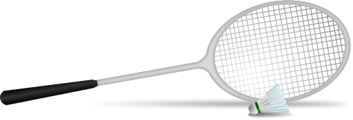

Badminton
Players & Equipment
There are two forms of badminton, singles and doubles (it¡¯s also possible to play mixed doubles).Each player is allowed to use a stringed racket (similar to a tennis racket but with the head being smaller) and a shuttlecock.
Scoring
point is scored when you successfully hit the shuttlecock over the net and land it in your opponent¡¯s court before they hit it. A point can also be gained when your opponent hits the shuttlecock into either the net or outside the parameters.
Winning the Game
To win a game you must reach 21 points before your opponent. If you do so then you will have won that set. If the scores are tied at 20-20 then it comes down to whichever player manages to get two clear points ahead.
Rules of Badminton
- Players must serve diagonally across the net to their opponent. As points are won then serving stations move from one side to the other. There are no second serves so if your first serve goes out then your opponent wins the point.
- A serve must be hit underarm and below the servers waist. No overarm serves are allowed.
- Each game will start with a toss to determine which player will serve first and which side of the court the opponent would like to start from.
- Once the shuttlecock is ¡®live¡¯ then a player may move around the court as they wish. They are permitted to hit the shuttlecock from out of the playing area.
- If a player touches the net with any part of their body or racket then it is deemed a fault and their opponent receives the point.